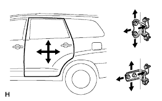

CỬA SAU > ĐIỀU CHỈNH |
| 1. ĐIỀU CHỈNH CỤM CỬA SAU TRÁI |
|  |
Nới lỏng các bu lông bản lề của thân xe và điều chỉnh vị trí cửa.
Hãy xiết chặt các bu lông bản lề thân xe sau khi điều chỉnh.
Nới lỏng các bu lông bản lề của cửa và điều chỉnh vị trí cửa.
Hãy xiết chặt các bu lông bản lề cửa sau khi điều chỉnh.
Dùng đầu khẩu hoa khế T30, điều chỉnh vị trí móc khoá bằng cách nới lỏng nhẹ vít bắt móc khoá và sau đó gõ lên móc bằng búa nhựa.
Dùng đầu khẩu T30, xiết chặt các vít bắt móc khoá sau khi điều chỉnh.